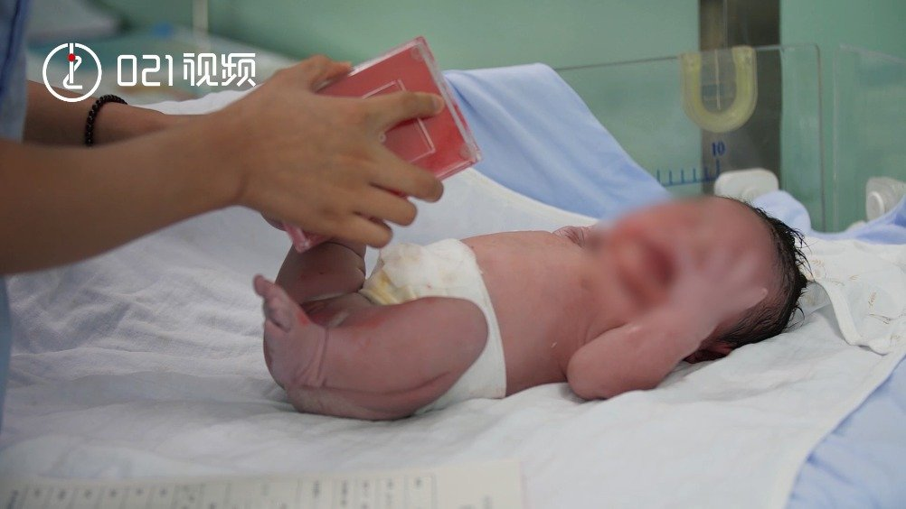

到上海找男朋友//@斌叔儿童编程和机器人:上海太强了。。。这是进步，虽然应该是同等长度@中国妇女报:【#上海拟建议强制男性休假不少于育儿假的1/3#】针对目前上海家庭二孩生育意愿少等问题，上海市妇联拟提交提案，#上海拟建议夫妻共用育儿假#，强制男性休假不少于育儿假的1/3。目前，上海生育妇女可享受的产假和生育假有128天（其中产假98天，新增设的生育假30天，且不包括难产假和多胎假），男方可享受配偶陪产假10天。021视频的微博视频 578万次播放 00:45
 //@斌叔儿童编程和机器人:上海太强了。。。这是进步，虽然应该是同等长度
//@斌叔儿童编程和机器人:上海太强了。。。这是进步，虽然应该是同等长度 021视频的微博视频
021视频的微博视频